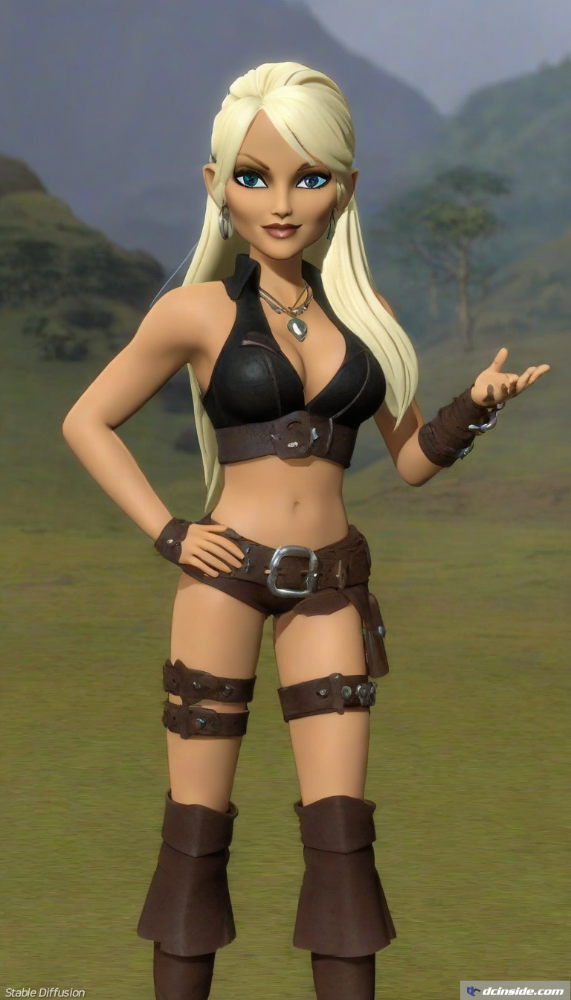

 AI 이미지가 생성되었습니다.새로고침(F5) 해 주세요. 프롬프트 doro 네거티브프롬프트 샘플링 Euler "나여, 백종원" - dc official App 출처: 도로롱 갤러리 [원본 보기]


댓글
수집 당시 댓글 9개
땨뗘(봇) · 11.09 05:26:05
楚覇王 項羽 · 11.09 05:26:36
실베도로롱 · 11.09 05:26:36
· 실베도로롱 · 11.09 05:26:48
· 앤드류그레이브스 · 11.09 05:27:07
· pyuru · 11.09 05:28:02
· ㅇㅇ · 11.09 05:28:28
ㅇㅇ · 11.09 10:35:02
ㅇㅇ · 11.09 10:35:08